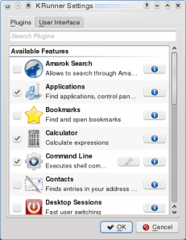
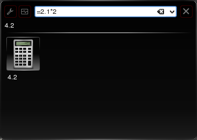
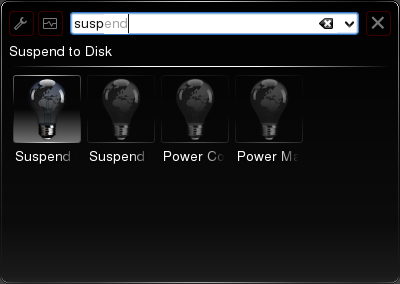
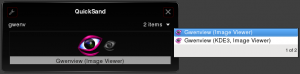

pub_date: 2008-12-16 21:00:00 +01:00
public: yes
tags: ["KDE","akonadi","krunner","powerdevil"]
title: "KRunner is more powerful than it looks"
The other day I got a bit fed up of having a "Starting Akonadi server" dialog showing up each time I logged on my KDE4 trunk session, so I decided to investigate what was causing this dialog to appear.
It turned out it was triggered by KRunner. In case you don't know what KRunner is, it's the cute little window which comes up when you press Alt+F2.
How can such an innocent window start an Akonadi server? The answer is: KRunner is much more powerful than it looks :). Notice the little wrench button on the left of the window? This is were the power is hidden. If you
click on it, you will be greeted with a configuration dialog like this:

If you are in the same situation as me when I opened this dialog for the first time, then all "Features" are likely to be checked. The responsible for the Akonadi start up, is the "Contacts" feature. Uncheck it and enjoy a faster login!
More goodness
While we are here, let's explore this dialog a bit more. There are quite a few interesting features waiting to be discovered.
Calculator
Need to crunch a few numbers, this is probably the fastest way to do it. Enter '=' and type your operation, Calculator will display the results as you type:

Do not forget the leading '=', otherwise it won't work.
Powerdevil
The Powerdevil feature is neat too: it makes it easy to suspend your computer from the keyboard. Start typing "suspend" and then select in the list on the bottom the suspend mode you wish to enter.

Nitpick: This feature should provide different icons for the different suspend modes. Right now the only way to know which is which is to select one and look up its title below the text entry.
Command Line
Command line is the most common feature, it starts your programs. If you want a light KRunner, you can uncheck all features but this one. You will still be able to start programs, the only thing you will miss is the application icon
and description.
Nitpick: This feature lets you select a few options from its configuration dialog, such as "Run in terminal window" or "Run as a different user". The problem is these options are the kind of settings you want to set when you run
particular commands. You probably do not want to make them permanent. As a result I think they are quite useless.
It would be more useful to add new keywords, like "run-in-term" or "run-as". This way when I want to run an app in a terminal I can type "run-in-term". And to run as a different user: "run-as ".
Even more goodness
The second tab of the config dialog let you choose between "Command oriented" and "Task oriented" user interfaces.
The "Task oriented" interface looks like this:

It's quite nice and let you easily go through the "run candidates" by pressing the left and right arrow, with a nice animation between them.
It has a few drawbacks though:
- I find the popup list on the right useless and not that nice.
- One needs to press Enter once to select the run candidate, then another time to start it. Pressing Enter once should be enough.
- There is not way to enter text, which makes it impossible to enter command parameters, use the calculator or paste an url.
Final words
KRunner really has more than meet the eyes. With a bit of work to make this raw power more visible, it would be even better. Here are a few ideas:
- The features should have a way to communicate how they work, for example by stating which "words" they provide. This way Powerdevil could tell me it understands various "suspend" words and I could probably figure out how the "Unit Converter" feature works :).
This could be done with a master-detail view: selecting a feature could show an info page on the right of the list.
- There should be multiple lines of text below the icons so that it's easier to distinguish between them (it would help Powerdevil for example)
Hmm... I should probably fill some Bugzilla wishes for those.